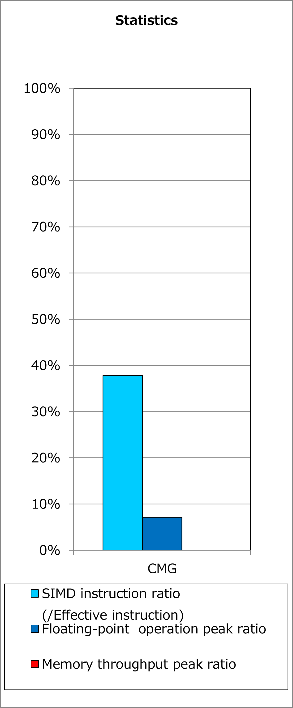
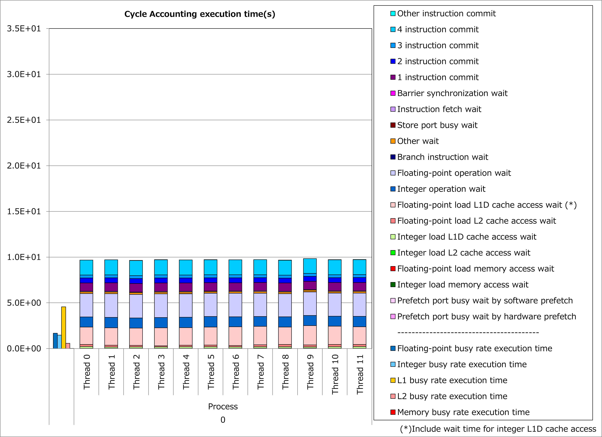
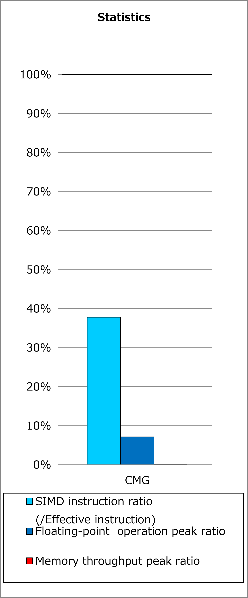
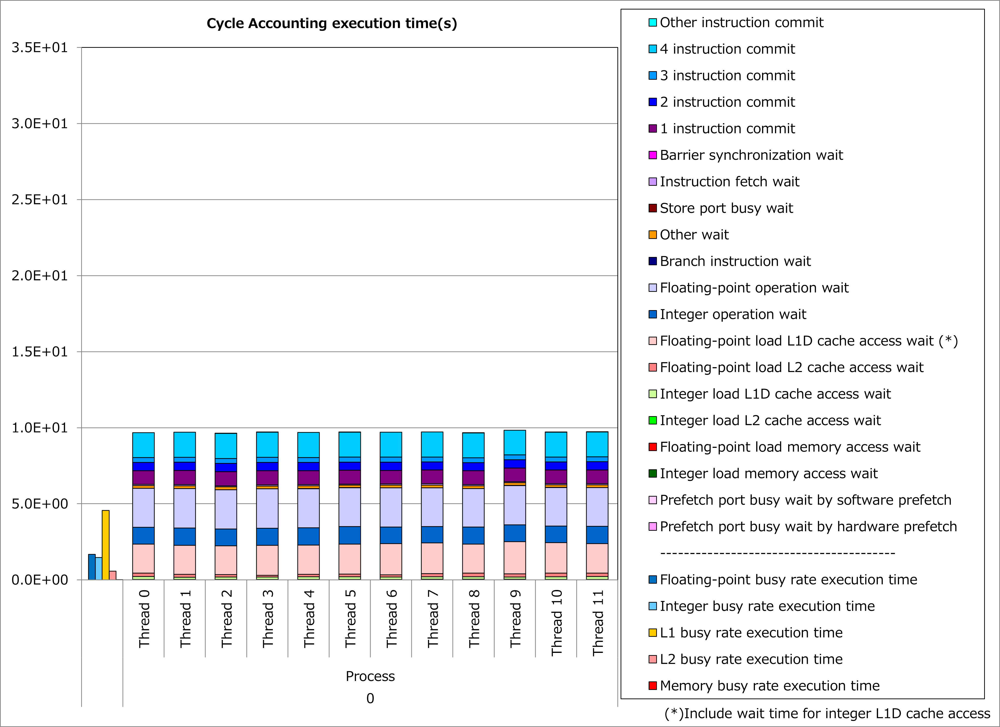

2.1. データ依存最内ループのループ交換¶
2.1.1. 動機¶
SIMD化されたループでは、異なるイタレーションの演算が同時に実行されます。 そのため、ループのイタレーション間でデータの依存関係がある場合、ソースプログラムどおりの演算結果を保証するために、そのループをSIMD化することはできません。
イタレーション間でデータの依存関係がないループ¶
DO i = 1, n
x(i) = x(i) + 1
END DO
イタレーション間でデータの依存関係があるループ¶
DO i = 1, n
x(i) = x(i-1) + 1
END DO
ここで、最内ループのイタレーション間でデータの依存関係があるものの、外側ループのイタレーション間では依存関係がない場合、これらのループをループ交換することによって、 交換前の外側ループをSIMD化 することができます。
その結果、ループの異なるイタレーションの演算が同時に実行されて、実行時間を短縮できる可能性があります。
2.1.2. 適用例¶
A64FX向けチューニング技術検討会 で示されたコード例を用いて、性能改善の例を以下に示します。 この例では、配列R12pls、E12mns、R12mnsおよびE12plsの代入/参照でデータ依存のあるdo変数kのループを、do変数ichおよびicloudのループとループ交換しています。
改善前¶
do ich = 1, chmax
do icloud = 1, 2
ic = (ich - 1) * MSTRN_ncloud + icloud
...
R(rd_kmax+1) = 0
T(rd_kmax+1) = 0
do k = rd_kmax, 1, -1
R(k) = (cf(k)) * R0(k,I_Cloud,ich) &
+ (1.0_RP - cf(k)) * R0(k,I_ClearSky,ich)
T(k) = (cf(k)) * T0(k,I_Cloud,ich) &
+ (1.0_RP - cf(k)) * T0(k,I_ClearSky,ich)
R12pls(k,ic) = R(k) + T(k) / (1.0_RP - R12pls(k+1,ic) * R(k)) &
* (R12pls(k+1,ic) * T(k))
E12mns(k,ic) = Em(k,ic) + T(k) / ( 1.0_RP - R12pls(k+1,ic) * R(k)) &
* (R12pls(k+1,ic) * Ep(k,ic) + E12mns(k+1,ic))
end do
do k = 2, rd_kmax+1
R12mns(k,ic) = R(k) + T(k) / (1.0_RP - R12mns(k-1,ic) * R(k)) &
* (R12mns(k-1,ic) * T(k))
E12pls(k,ic) = Ep(k,ic) + T(k) / (1.0_RP - R12mns(k-1,ic) * R(k)) &
* (R12mns(k-1,ic) * Em(k,ic) + E12pls(k-1,ic))
end do
end do
end do
改善後¶
do ich = 1, chmax
do icloud = 1, 2
ic = (ich - 1) * MSTRN_ncloud + icloud
do k = 1, rd_kmax
R(k,ic) = (cf(k,ic)) * R0(k,I_Cloud,ich) &
+ (1.0_RP - cf(k,ic)) * R0(k,I_ClearSky,ich)
T(k,ic) = (cf(k,ic)) * T0(k,I_Cloud,ich) &
+ (1.0_RP - cf(k,ic)) * T0(k,I_ClearSky,ich)
end do
R(rd_kmax+1,:) = 0
T(rd_kmax+1,:) = 0
end do
end do
do kk = 1, rd_kmax
do ic = 1, chmax * MSTRN_ncloud
k = rd_kmax - kk + 1
R12pls(ic,k) = R(k,ic) + T(k,ic) / (1.0_RP - R12pls(ic,k+1) * R(k,ic)) &
* (R12pls(ic,k+1) * T(k,ic))
E12mns(ic,k) = Em(k,ic) + T(k,ic) / (1.0_RP - R12pls(ic,k+1) * R(k,ic)) &
* (R12pls(ic,k+1) * Ep(k,ic) + E12mns(ic,k+1))
k = kk + 1
R12mns(ic,k) = R(k,ic) + T(k,ic) / (1.0_RP - R12mns(ic,k-1) * R(k,ic)) &
* (R12mns(ic,k-1) * T(k,ic))
E12pls(ic,k) = Ep(k,ic) + T(k,ic) / (1.0_RP - R12mns(ic,k-1) * R(k,ic)) &
* (R12mns(ic,k-1) * Em(k,ic) + E12pls(ic,k-1))
end do
end do
改善前および改善後コードのSIMD命令率とサイクルアカウンティング測定結果を下記グラフに示します。 なお、性能測定条件は以下のとおりです。
rd_kmax = 54、chmax = 5、MSTRN_ncloud = 2
改善前(上段のグラフ)に対して改善後(下段のグラフ)の測定結果では、SIMD命令率が0%から38%に改善し、実行時間が67%減ったことが分かります。

 



{kind=link}
{kind=link}
2.1.3. 実例¶
A64FX向けチューニング技術検討会 にて、この種の事例が以下のとおり紹介されています。